Сехмет
ЛЬВИЦА · СОЛНЕЧНЫЙ ДИСК · 28 ГРАНЕЙ
Фронтальная маска львицы с диском, рогами, боковыми панелями гривы и жёсткой симметрией.
АВТОРСКАЯ SVG-СЕРИЯ · REDESIGN 02
Одиннадцать самостоятельных образов с выраженной египетской атрибутикой, красной low-poly пластикой и чёрным негативным пространством.
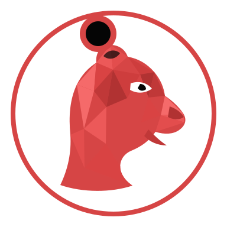
Фронтальная маска львицы с диском, рогами, боковыми панелями гривы и жёсткой симметрией.
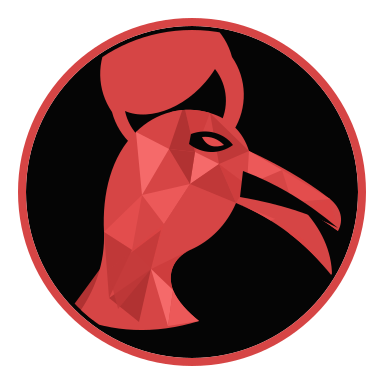
Вытянутый профиль ибиса с длинным изогнутым клювом и крупным лунным знаком.
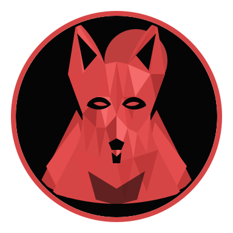
Фронтальная маска с длинными ушами, узкой мордой и геометрическими панелями головного убора.
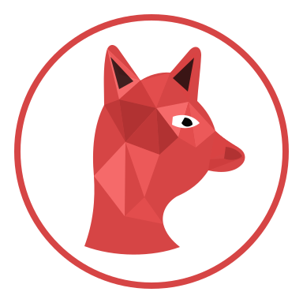
Профиль кошки с египетским глазом, усами, лунным знаком и широким ожерельем.
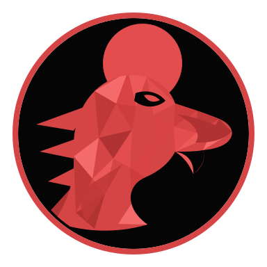
Солнечный сокол с коротким загнутым клювом, диском и тремя геометрическими лучами.
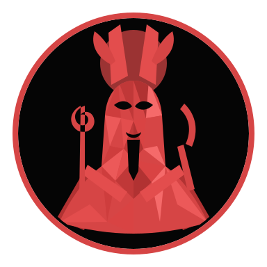
Фронтальный образ с короной атеф, длинной бородой, скрещёнными руками и царскими атрибутами.
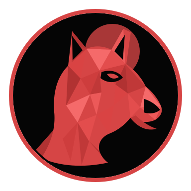
Угловатый профиль с прямоугольными ушами, изогнутой мордой и контрастным солнечным диском.
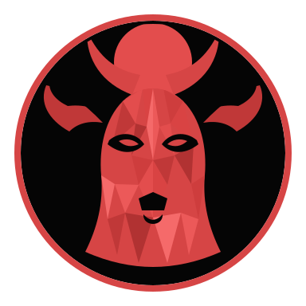
Симметричная маска коровы с широкими ушами и солнечным диском между выгнутыми рогами.
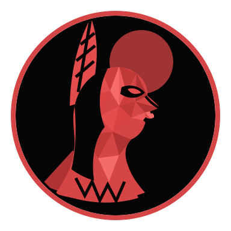
Человеческий профиль с высоким страусиным пером, прямой осанкой и геометрическим ожерельем.
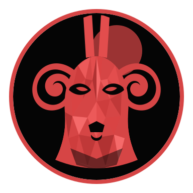
Фронтальная маска овна с закрученными рогами, высоким двойным пером и строгой симметрией.
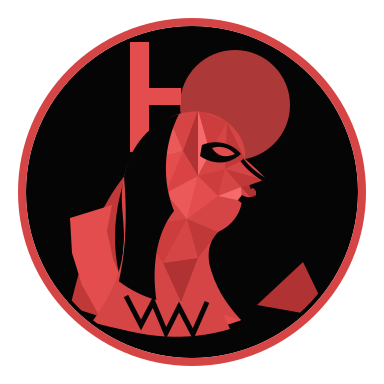
Человеческий профиль с тронным знаком, солнечным диском, стилизованным крылом и широким ожерельем.